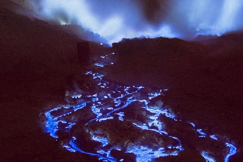

Vulcão de Lava Azul
O vulcão Kawah Ijen está localizado na Indonésia, na região de Java Oriental.
Ele pertence a um compelxo vulcânico com cerca de 143 outros vulcões na região e chama atenção por ser o único vulcão no mundo que expele uma lava azul. A cratera em que o Kawah se encontra tem cerca de 2 Km de diâmetro e está a 2.386 metros de altura.
A lava se torna azul quando sai do vulcão, ao entrar em contato com a grande quantidade de ‘enxofre puro’, que existe no vulcão. A alta temperatura da lava, que sai em média a 600°C, com o enxofre, faz a lava ficar com a cor azul ao entardecer. Curiosamente, a lava só se torna azul quando o sol começa a desaparecer.
Devido ao cheiro forte do enxofre a maioria dos turistas sobre para ver a lava com máscaras. Porém, no vulcão existem trabalhadores que extraem enxofre noite e dia. Homens e mulheres trabalham com dificuldade devido a alta temperatura e o forte cheiro de enxofre. A cada quilo de enxofre extraído, eles recebem 680 rúpias, o que equivale a R$ 0,13. Um trabalho duro e árduo por uma recompensa tão pequena.
Para chega na Indonésia é preciso pegar mais de um voo. Não existem voos diretos do Brasil para lá. È necessário comprar o ticket aéreo em alguma companhia internacional fazendo escala na Europa, e depois seguir caminho até as ilhas da Indonésia. Uma viagem que durará longas horas, mas que com certeza, valerá a pena.

Referências
https://nationalgeographic.pt/natureza/grandes-reportagens/1366-vulcao-java-junh2014https://viajecomigo.tur.br